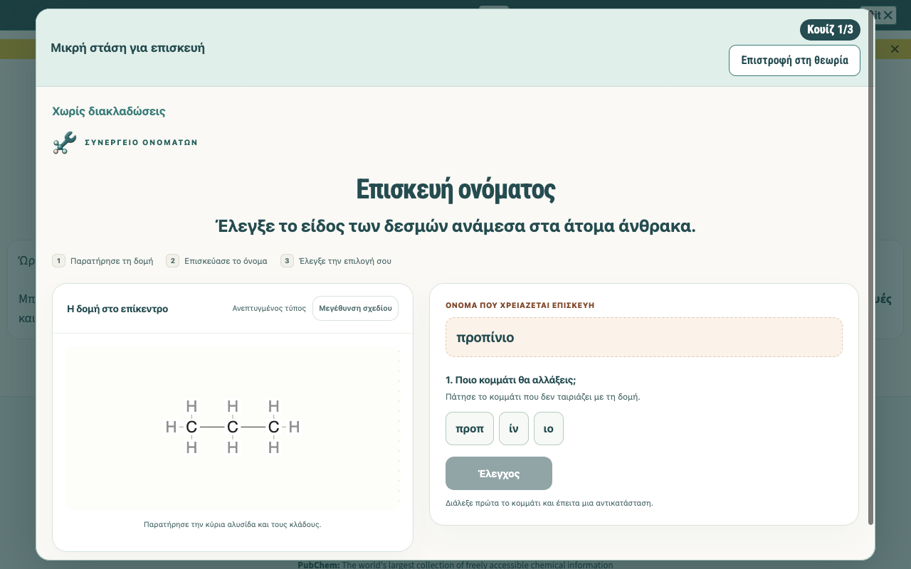
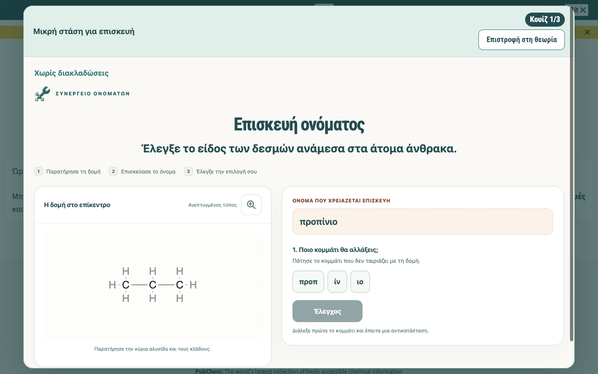
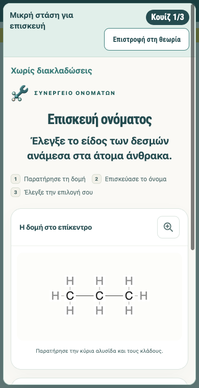
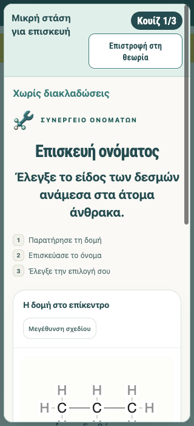
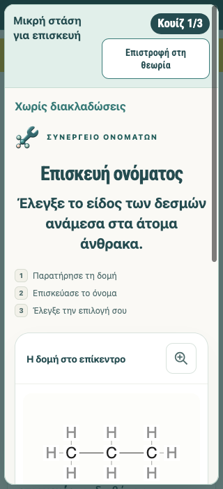
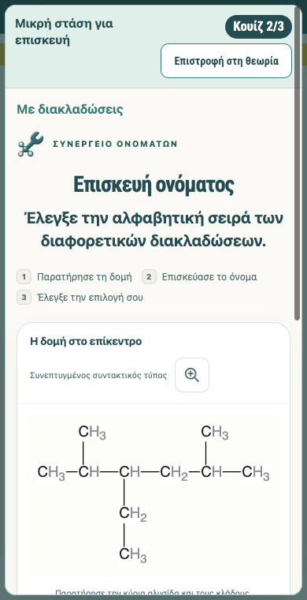
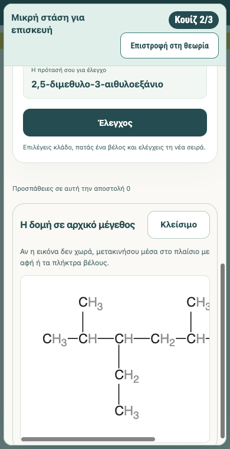

Διακριτικός φακός στο κουίζ αλκανίων
Δοκίμασέ το στο μάθημα
Στο βήμα 4 πάτησε «Πήγαινε στο συνεργείο» και μετά τον φακό.
Το υπάρχον κουμπί της κεφαλίδας έγινε φακός με στόχο 44×44 px. Η ίδια μεγέθυνση ανοίγει με πάτημα, Enter ή Space και κλείνει με «Κλείσιμο» ή Escape, επιστρέφοντας την εστίαση. Οι εικόνες είναι πραγματικές λήψεις Firefox σε απομονωμένο προφίλ. Το Safari εμφανίζει αυτή τη σύγκριση· δεν έχει εκτελεστεί αυτοματοποιημένος έλεγχος Safari.
Βήμα 4 — οθόνη 1280 px
Πριν — κουμπί κειμένου
Μετά — φακός στην ίδια κεφαλίδα
Στενή οθόνη 390 px
Πριν — 390 px
Μετά — 390 px
Στενή οθόνη 320 px
Πριν — 320 px
Μετά — 320 px
Κουίζ σειράς — συνεπτυγμένος τύπος
Βήμα 11, κουίζ 2 — 390 px
Η ίδια μεγέθυνση — 390 px
Για περιορισμένη πρόσβαση στο κουίζ σειράς χρησιμοποιήθηκε αυτούσια πρόοδος που είχε κερδηθεί σε προηγούμενο πραγματικό έλεγχο. Στον σημερινό έλεγχο λύθηκαν μία αντικατάσταση και μία σειρά· δεν επαναλήφθηκε πλήρης ολοκλήρωση των δύο σετ.
Αποδείξεις: σύντομη αναφορά · SHA-256 αρχείων. Το αυτόνομο Συνεργείο και οι προεπιλεγμένες ενσωματώσεις διατηρούν το κουμπί κειμένου. Χωριστή ελεγχόμενη fixture έλεγξε φόρτωση/σφάλμα εικόνας και εφεδρικό SVG χωρίς registry εικονιδίων. Δεν ελέγχθηκαν φυσικό κινητό, προβολέας, offline λειτουργία ή το ιστορικό πάγωμα Firefox.